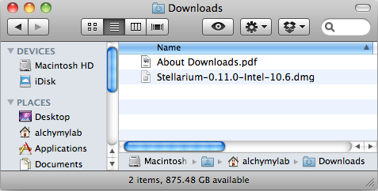
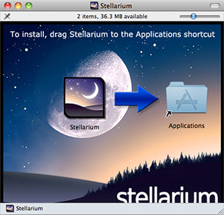
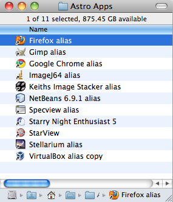

Installing the Intel version of Stellarium involved downloading the disc image file from the Stellarium site and then simply copying the application package to the iMac Applications folder. No installer process had to be run and it is best to copy the application out of the disc image file. An alias can then be created to place on your Desktop.
The main application comes as a package file which effectively hides the contents inside a folder with its own directory structure. The first time the Stellarium application is run it creates a folder in the OS X user library, this has its own directory structure and a folder is created under each user who runs Stellarium on the machine.
This User Data Directory is used to store the configuration file for that user, scripts and data, all of which override configuration and data in the main application folder. The main application contents thus act as a default for new users and a backup should anything go wrong with a users configuration.
If a file exists in the User Data Directory, it will be used in preference to a file with the same name existing in the Installation Data Directory. This allows users to customise data files, textures and so on without modifying the originally installed files.
The details of the main application and its 'bundle' structure and the user directory are now detailed in the sections that follow.
You should visit the Stellarium website. Download packages for various platforms are available directly from the main page. Choose the correct package for your operating system.
Installing the Intel version of Stellarium involved downloading the disc image
file from the Stellarium site and then simply copying the application package to
the iMac Applications folder.


By selecting and "right click" an alias can then be created in the Applications folder to drag to the Desktop, or place in a specific folder with other Astronomy related applications. Example below shows how to group applications without cluttering the Desktop or Dock :

There is also a Universal binary version of Stellarium available which will work for older Gn series Mac platforms, but the Intel specific version is recommended for the Intel platform. ( Our Alchymy Lab currently has Intel iMac and G4 Power Book platforms, but our main use is the iMac platform ).